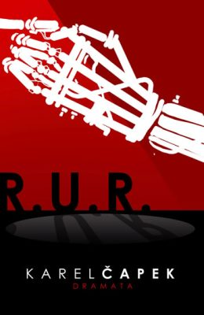

Autor: Karel Èapek
®ánr: Klasika
Hodnocení: + 2
Èapkovo utopistické drama, v nìm¾ se svìtu poprvé pøedstavilo slovo robot. Vypráví o továrnì, v ní¾ vznikají roboti, kteøí pracují za lidi a umo¾òují tak vzniku jakéhosi "ráje". Jenom¾e nic netrvá vìènì a i roboti mù¾ou zaèít myslet na sebe.
U¾ po pøeètení prvních stran knih jsem vìdìla, ¾e se R.U.R. zaøadí mezi mé oblíbené. Jeho "nadèasovost" mì opravdu zaujala, kdy¾ pomyslím, ¾e první vydání knihy bylo roce 1920! Je to a¾ neuvìøitelné, jak Èapek vystihl hlavní podstatu svìta s roboty. Toto dílo je urèitì takovým "pøeddílem" pro spoustu jiných literární a filmových prací 20. a 21. století. - eternal-magic.cz
Kateøina Foøtová
>Unikátní kniha, stále aktuální, ètivá, s promy¹leným dìjem, jedno z nejlep¹ích ètení v rámci maturitní èetby.
Barbora Podzimková
Velmi ètivé drama s pøíbìhem, jen¾ byl nadèasový a stále máme, co se z nìj uèit. Výhodou je, ¾e se to dá pøeèíst za chvíli a bude Vás to bavit a¾ do konce.